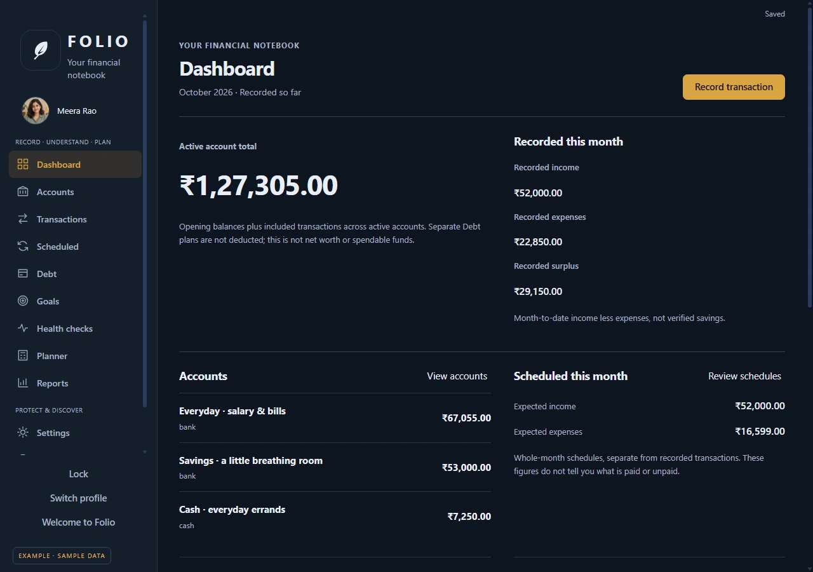
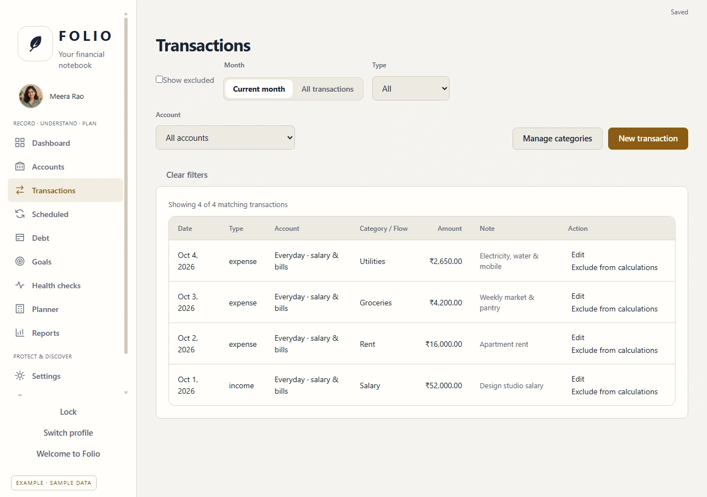
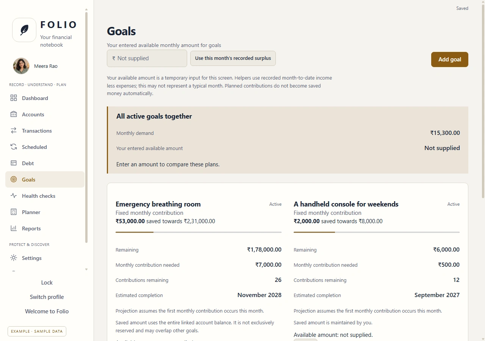
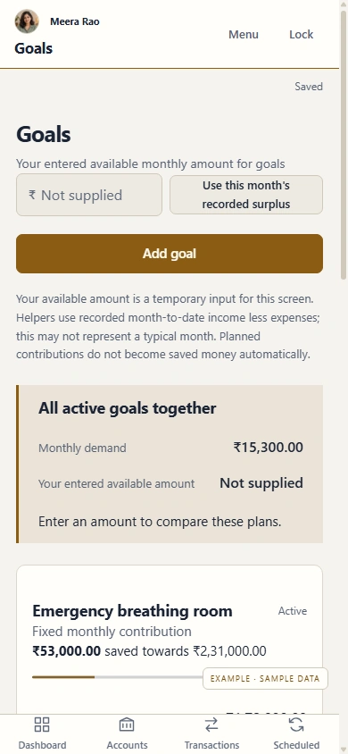
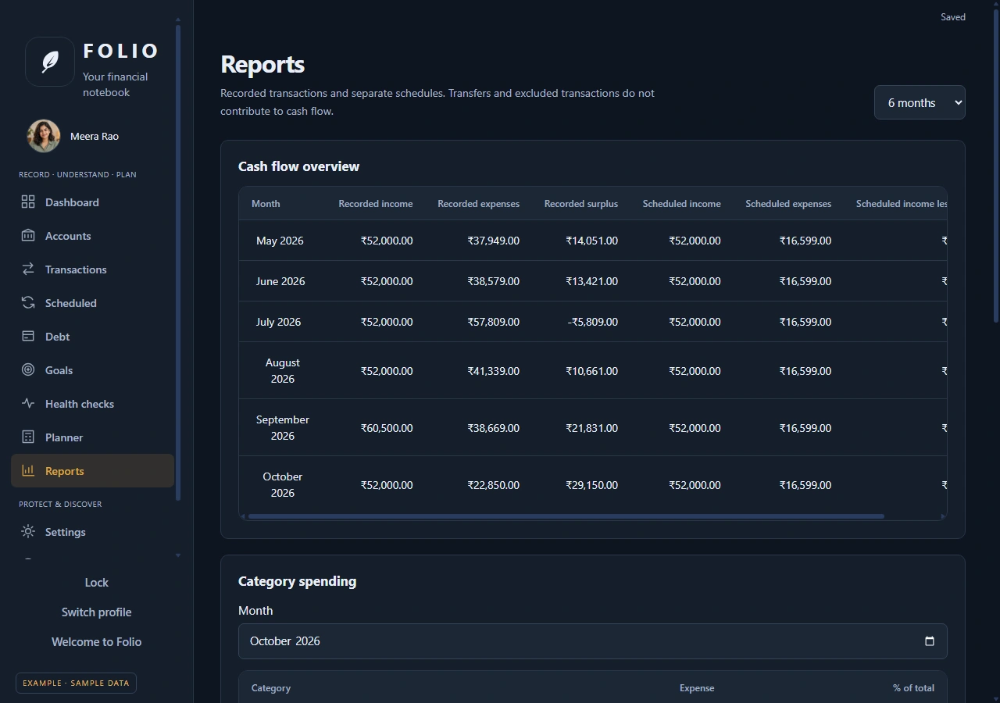

Folio / Personal finance & planning
Your finances.
Your device.
Your control.
A private, local-first home for your financial life.
Record the everyday. Understand the bigger picture. Make room for the plans ahead — with your data on your own device.
Windows x64 installer · Android APK

Real screens from Folio’s fictional example profile.
01 / Keep a clear record
The everyday,
in order.
Keep accounts, income, expenses, and transfers together. Use categories and filters to find what you need, with recurring schedules for the payments you expect.
Scheduled amounts are plans, separate from the transactions you record.

02 / Give the future some shape
A goal. A timeline.
A little perspective.
Plan savings goals, maintain debt records, and explore purchase scenarios using the figures and assumptions you enter.




Projections help you think through a plan. They’re based on your inputs and aren’t a promise of future results.

03 / Step back and see
Patterns worth
noticing.
Review monthly cash flow and category spending in Reports. Health checks compare the figures you supply with targets you choose.
These are tools for understanding your records and exploring your plans, rather than a financial-advice service.
Private by design
Your records.
Your keeping.
Folio works locally with encrypted profiles. It doesn’t need a bank login or a cloud account.
Keep an encrypted backup somewhere safe outside the app. Export records as CSV when you need them elsewhere; CSV files are readable, so store them with care.
Folio currently uses Indian rupees (INR).
Make it your Folio